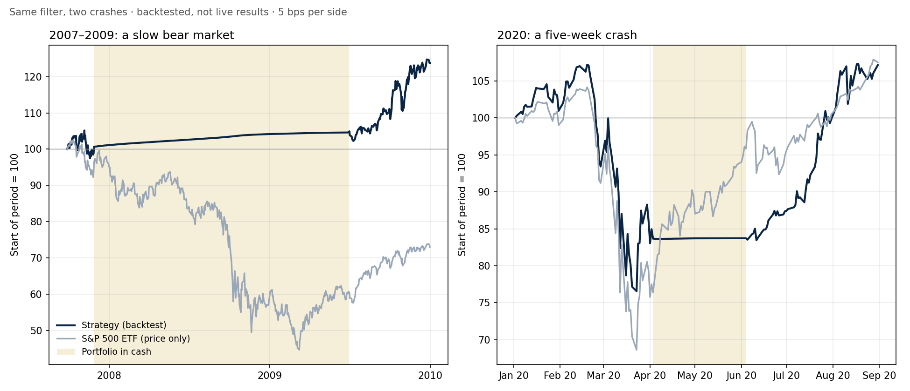

We were recently asked how often our regime filter ‘gets it right’, and the honest answer is, at first sight, embarrassing: almost never. Since 2007 it has moved the portfolio entirely to cash 11 times, and in 9 of those cases, by the time we went back in, the S&P 500 was higher than when we had left. And yet, if we had to remove one piece of the strategy, this would be the last, because of the other 2 times. In the financial crisis the filter exits at the end of November 2007 and comes back in June 2009: in 2008 the strategy closes at +3.0% against −38.4% for the index. In the 2022 bear market, from January to mid-October, it returns +22.1% against −24.9%.
Where it does not protect is in fast crashes, like the Covid one, which played out in 23 sessions (between 19 February and 23 March 2020), that is, between two reviews: the strategy goes through it fully invested (−28.6% against −34.1%) and the filter triggers on 3 April, with the low already behind, missing the +25.5% of the following 2 months. 2020 still closes at +23.4% (index +16.2%), but not thanks to the filter: thanks to what the portfolio did after June.
| Episode | Length of decline | Strategy | S&P 500 price only |
|---|---|---|---|
| 2007–2009 | 17 months | +4.4% | −55.4% |
| Covid crash 2020 | 23 sessions | −28.6% | −34.1% |
| Bear market 2022 | 10 months | +22.1% | −24.9% |

The difference does not lie in the filter, which is the same, but in the speed of the decline, and that is why a regime filter is not judged by the percentage of times it is right. It works like insurance: you pay a small, frequent premium (the false alarms, the missed recoveries) to avoid a rare and large loss (the −55% of 2008), and whoever judges it by counting its successes switches it off after the third false alarm, that is, right before it is needed.
Trusting a mechanism that is wrong 9 times out of 11 is only possible if you know exactly why it is wrong, and that is the part of the work nobody sees. The strategy has few rules by design, because every extra rule is one more chance to fit the past; getting there meant building and discarding 4 others. The settings were frozen before testing and compared against 54 neighbouring configurations: we publish the median, not the best case, and three attempts to re-optimise them always made out-of-sample results worse.
In 2020 our filter was late too, but the difference is that its error was expected, measured and accounted for in advance, while the error of those who decide on gut feeling is not: six years ago I saw first-hand investors follow their instinct and liquidate their portfolios shortly before the lows, only to get back in when half of the rally was already behind them. The market remains extremely hard to anticipate, especially when volatility decides to explode. Statistical analysis and methodological rigour remain, in the long run, the best allies for surviving the trenches of the trading floor.
Backtested results. Costs of 5 basis points per side, idle cash earning the 3-month US rate, S&P 500 measured on price only. Past performance is not indicative of future results.